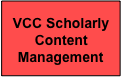

The DARIAH scholarly content management will expose and share scholarly content and is carried out by the Virtual Compentency Centre 3 (VCC3) Scholarly Content Management.
Goals and scope
The scholarly content management VCC will deal with the various stages of the scholarly content life cycle, from creation, curation, and dissemination, through to the pooling of scholarly digital resources and results for reuse. The VCC will offer services and resources for the representation and management of data, as well as for the management of associated legal and organizational issues.
Thereby it aims to enhance data quality, preservation, and deep interoperability, as well as furthering a culture of data sharing in the A+H.
Among the key infrastructure concepts contributed by VCC3 are relevant standards, reference licenses, and best practice guidelines. Its products and support services address a diverse target community including A+H data centres and research networks, as well as individual researchers.
Curation
This activity supports A+H data centres by providing reference policies and guidelines, as well as by creating a virtual digital curation helpdesk for data management.
The data is part of the infrastructure and the DARIAH community can access the data by single sign on.
A service could be helping to make the data accessible.
Furthermore, it establishes a framework for evaluating A+H data centres as to their capacity to preserve A+H scholarly content over time, following such pre-existing guides as those established for trusted digital repositories. Information on the European framework for audit and certification: http://www.trusteddigitalrepository.eu
These could be used as a basis for evaluating the data centres and DARIAH can add on extra guidelines that are specific for DARIAH. For instance DARIAH can say a repository has to have the Data Seal of Approval (DSA) as a minimum and has to adhere to some extra guidelines.
DARIAH is not aiming at one central Curation centre but it is the national partners that will have the responsibility for the Curation in their repositories. VCC3 will support the DARIAH community to do so.
Best Practices and Open Access
This activity will produce guidance and reference material in order to allow research communities to disseminate their research productions (publications and data) to a wide academic and societal audience:
- Provision of reference licenses (such as those offered by the creative commons framework) to optimize the trade-off between wider access and rights protection (in particular proper scholarly attribution)
- When applicable, and in full allegiance to subsidiary principles, DARIAH will take up cross-national license negotiations to facilitate access to large collections or to optimize relations with complementary endeavours in the library domains
- Work with communities to identify optimal policies according to the actual research fields and corresponding existing practices
- It will formulate recommendations on preferred formats for digital preservation.
- The implementation of the Data Seal of Approval for repositories will be mandatory
This activity will facilitate the wide identification and dissemination of digital assets.
It defines channels for data reuse and exchange across communities and research infrastructures1, provides reference data registries for the description of scholarly data (e.g. authority lists, registries, reference ontologies), and collaborates with VCC1 e-Infrastructure for deploying relevant tools and registries.
Repository Support
This activity aims to support A+H data centres in achieving trusted digital repositories. In collaboration with VCC1 e-Infrastructure it aims to deploy easy-to-use repository environments that facilitate the inclusion of new partners’ data holdings into the DARIAH infrastructure.
Enrich Digital Contents
In the digital humanities, data and document producers are increasingly exposing their data to be enriched and reused. As a result, locating and accessing data within this growing body of multilingual, multicultural, and multidisciplinary information is a challenge. Metadata quality is therefore an essential feature for ensuring deep and widespread scholar engagement. The use of the semantic RDF format will allow for the interconnection of heterogeneous data and the integration of new and valuable services for A+H. VCC3 will provide guidelines, expertise and workflows on enriching digital content.
For further information please contact our VCC heads Sophie David or Laurents Sesink